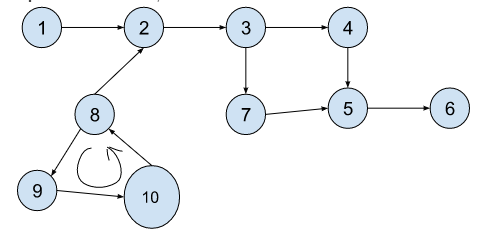
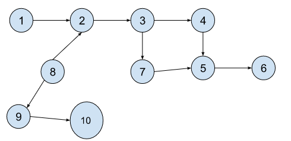
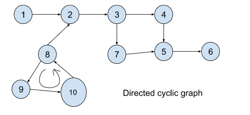
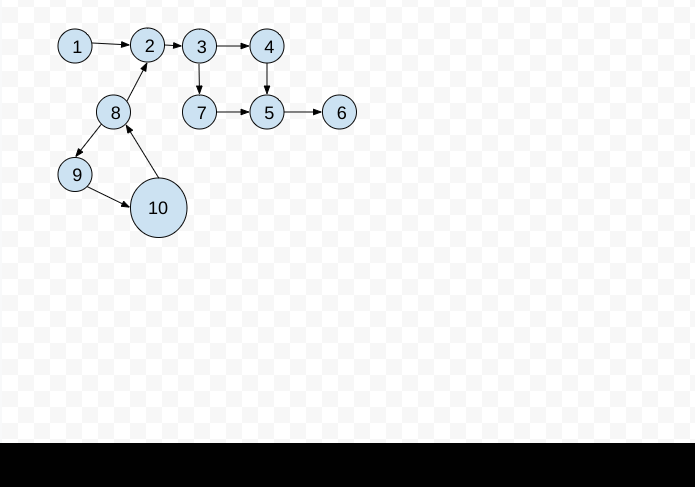
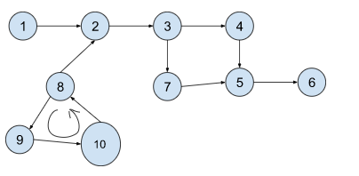
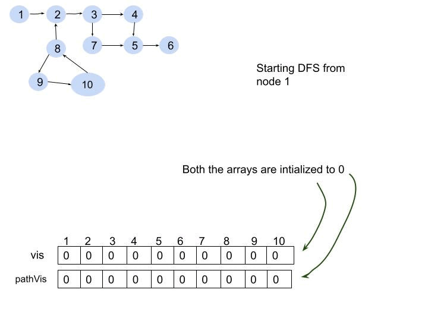

Detect cycle in a directed graph (using DFS) : G 19
Problem Statement: Given a directed graph with V vertices and E edges, check whether it contains any cycle or not.
Example 1:
Input: N = 10, E = 11

Output: true
Explanation: 8->9->10 is a cycle.
Example 2:
Input Format: N = 10, E = 10

Result: false
Explanation: No cycle detected.
Solution
Disclaimer: Don't jump directly to the solution, try it out yourself first.
Intuition:
In a Directed Cyclic Graph, during traversal, if we end up at a node, which we have visited previously in the path, that means we came around a circle and ended up at this node, which determines that it has a cycle. Previously, we have learned a similar technique to detect cycles in an Undirected Graph (using DFS). In that method, the algorithm returns true, if it finds an adjacent node that is previously visited and not a parent of the current node. But the same algorithm will not work in this case. Let’s understand why this happens considering the below graph.

You can also look at the GIF below, in case you fail to understand the below points.
Let’s start DFS from node 1. It will follow the path 1->2->3->4->5->6, all the nodes including 5 will be visited as marked.
As there are no further nodes after node 6, DFS will backtrack to node 3 and will follow the path: 3->7->5->6. It followed this path because this path was left to be explored.
Reaching node 7, the adjacent node 5 can be found previously visited, but ideally, it should not have been visited, as we did not visit this node in a continuous path. At this point, the algorithm will conclude that this is a cycle and will return true but this is not a cycle as node 5 has been visited twice following two different paths.
This would have been true if the nodes are connected to undirected edges. But as we are dealing with directed edges this algorithm fails to detect a cycle.
Due to the above reason, we need to think of an algorithm, which keeps a track of visited nodes, in the traversal only.
The process will be similar as illustrated.

So the intuition is to reach a previously visited node again on the same path. If it can be done, we conclude that the graph has a cycle.
Note:If a directed graph contains a cycle, the node has to be visited again on the same path and not through different paths.
Approach:
Consider the following graph:

We will be solving it using DFS traversal. DFS goes in-depth, i.e., traverses all nodes by going ahead, and when there are no further nodes to traverse in the current path, then it backtracks on the same path and traverses other unvisited nodes.
The algorithm steps are as follows:
We will traverse the graph component-wise using the DFS technique.
Make sure to carry two visited arrays in the DFS call. One is a visited array(vis) and the other is a path-visited(pathVis) array. The visited array keeps a track of visited nodes, and the path-visited keeps a track of visited nodes in the current traversal only.
While making a DFS call, at first we will mark the node as visited in both the arrays and then will traverse through its adjacent nodes. Now, there may be either of the three cases:
Case 1: If the adjacent node is not visited, we will make a new DFS call recursively with that particular node.
Case 2: If the adjacent node is visited and also on the same path(i.e marked visited in the pathVis array), we will return true, because it means it has a cycle, thereby the pathVis was true. Returning true will mean the end of the function call, as once we have got a cycle, there is no need to check for further adjacent nodes.
Case 3: If the adjacent node is visited but not on the same path(i.e not marked in the pathVis array), we will continue to the next adjacent node, as it would have been marked as visited in some other path, and not on the current one.
Finally, if there are no further nodes to visit, we will unmark the current node in the pathVis array and just return false. Then we will backtrack to the previous node with the returned value. The point to remember is, while we enter we mark both the pathVis and vis as true, but at the end of traversal to all adjacent nodes, we just make sure we unmark the pathVis and still keep the vis marked as true, as it will avoid future extra traversal calls.
The following illustration will be useful in understanding the algorithm:

Code:
#include <bits/stdc++.h>
using namespace std;
class Solution {
private:
bool dfsCheck(int node, vector<int> adj[], int vis[], int pathVis[]) {
vis[node] = 1;
pathVis[node] = 1;
// traverse for adjacent nodes
for (auto it : adj[node]) {
// when the node is not visited
if (!vis[it]) {
if (dfsCheck(it, adj, vis, pathVis) == true)
return true;
}
// if the node has been previously visited
// but it has to be visited on the same path
else if (pathVis[it]) {
return true;
}
}
pathVis[node] = 0;
return false;
}
public:
// Function to detect cycle in a directed graph.
bool isCyclic(int V, vector<int> adj[]) {
int vis[V] = {0};
int pathVis[V] = {0};
for (int i = 0; i < V; i++) {
if (!vis[i]) {
if (dfsCheck(i, adj, vis, pathVis) == true) return true;
}
}
return false;
}
};
int main() {
// V = 11, E = 11;
vector<int> adj[11] = {{}, {2}, {3}, {4, 7}, {5}, {6}, {}, {5}, {9}, {10}, {8}};
int V = 11;
Solution obj;
bool ans = obj.isCyclic(V, adj);
if (ans)
cout << "True\n";
else
cout << "False\n";
return 0;
}
Output: True
Time Complexity: O(V+E)+O(V) , where V = no. of nodes and E = no. of edges. There can be at most V components. So, another O(V) time complexity.
Space Complexity: O(2N) + O(N) ~ O(2N): O(2N) for two visited arrays and O(N) for recursive stack space.
import java.util.*;
class Solution {
private boolean dfsCheck(int node, ArrayList<ArrayList<Integer>> adj, int vis[], int pathVis[]) {
vis[node] = 1;
pathVis[node] = 1;
// traverse for adjacent nodes
for(int it : adj.get(node)) {
// when the node is not visited
if(vis[it] == 0) {
if(dfsCheck(it, adj, vis, pathVis) == true)
return true;
}
// if the node has been previously visited
// but it has to be visited on the same path
else if(pathVis[it] == 1) {
return true;
}
}
pathVis[node] = 0;
return false;
}
// Function to detect cycle in a directed graph.
public boolean isCyclic(int V, ArrayList<ArrayList<Integer>> adj) {
int vis[] = new int[V];
int pathVis[] = new int[V];
for(int i = 0;i<V;i++) {
if(vis[i] == 0) {
if(dfsCheck(i, adj, vis, pathVis) == true) return true;
}
}
return false;
}
}
public class tUf {
public static void main(String[] args) {
int V = 11;
ArrayList<ArrayList<Integer>> adj = new ArrayList<>();
for (int i = 0; i < V; i++) {
adj.add(new ArrayList<>());
}
adj.get(1).add(2);
adj.get(2).add(3);
adj.get(3).add(4);
adj.get(3).add(7);
adj.get(4).add(5);
adj.get(5).add(6);
adj.get(7).add(5);
adj.get(8).add(9);
adj.get(9).add(10);
adj.get(10).add(8);
Solution obj = new Solution();
boolean ans = obj.isCyclic(V, adj);
if (ans)
System.out.println("True");
else
System.out.println("False");
}
}
Output: True
Time Complexity: O(V+E)+O(V) , where V = no. of nodes and E = no. of edges. There can be at most V components. So, another O(V) time complexity.
Space Complexity: O(2N) + O(N) ~ O(2N): O(2N) for two visited arrays and O(N) for recursive stack space.
Special thanks to KRITIDIPTA GHOSH for contributing to this article on takeUforward. If you also wish to share your knowledge with the takeUforward fam, please check out this article. If you want to suggest any improvement/correction in this article please mail us at write4tuf@gmail.com